Result type: detections_animal, image: images/batch_0/2024-06-27_UR011--SYFW1913.JPG, max conf: 0.841
Result type: detections_animal, image: images/batch_0/2024-06-27_UR011--SYFW1936.JPG, max conf: 0.906
Result type: detections_animal, image: images/batch_0/2024-06-27_UR011--SYFW1940.JPG, max conf: 0.883

Result type: detections_animal, image: images/batch_0/2024-06-27_UR011--SYFW1943.JPG, max conf: 0.915
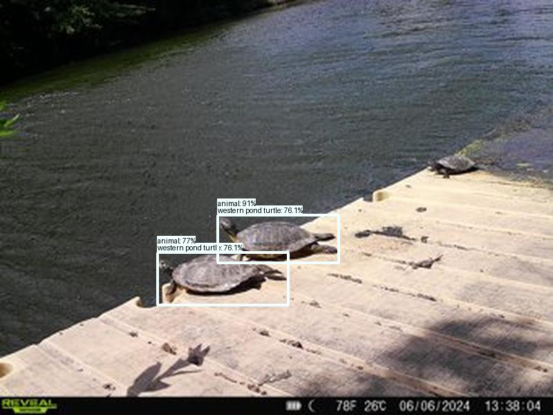Result type: detections_animal, image: images/batch_0/2024-06-27_UR011--SYFW1984.JPG, max conf: 0.910
Result type: detections_animal, image: images/batch_0/2024-06-27_UR011--SYFW1993.JPG, max conf: 0.812

Result type: detections_animal, image: images/batch_0/2024-06-27_UR011--SYFW2017.JPG, max conf: 0.830
Result type: detections_animal, image: images/batch_0/2024-06-27_UR011--SYFW2084.JPG, max conf: 0.834

Result type: detections_animal, image: images/batch_0/2024-06-27_UR011--SYFW2092.JPG, max conf: 0.944

Result type: detections_animal, image: images/batch_0/2024-06-27_UR011--SYFW2096.JPG, max conf: 0.939

Result type: detections_animal, image: images/batch_0/2024-06-27_UR011--SYFW2117.JPG, max conf: 0.864

Result type: detections_animal, image: images/batch_0/2024-06-27_UR011--SYFW2164.JPG, max conf: 0.908

Result type: detections_animal, image: images/batch_0/2024-06-27_UR011--SYFW2240.JPG, max conf: 0.738

Result type: detections_animal, image: images/batch_0/2024-06-27_UR011--SYFW2405.JPG, max conf: 0.909

Result type: detections_animal, image: images/batch_0/2024-06-27_UR011--SYFW2465.JPG, max conf: 0.865
Result type: detections_animal, image: images/batch_0/2024-06-27_UR011--SYFW2494.JPG, max conf: 0.948

Result type: detections_animal, image: images/batch_0/2024-06-27_UR011--SYFW2613.JPG, max conf: 0.847
Result type: detections_animal, image: images/batch_0/2024-06-27_UR011--SYFW2615.JPG, max conf: 0.671
Result type: detections_animal, image: images/batch_0/2024-06-27_UR011--SYFW2645.JPG, max conf: 0.892

Result type: detections_animal, image: images/batch_0/2024-06-27_UR011--SYFW2662.JPG, max conf: 0.881

Result type: detections_animal, image: images/batch_0/2024-06-27_UR011--SYFW2667.JPG, max conf: 0.912
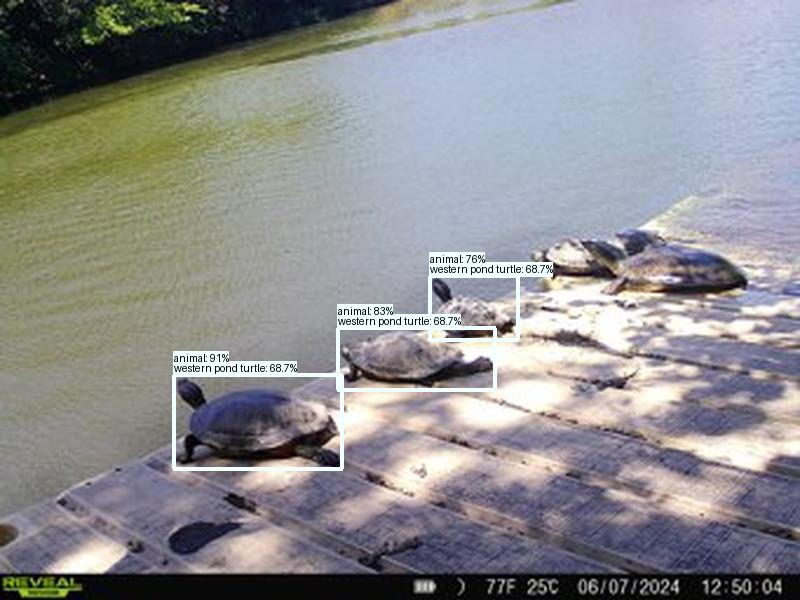Result type: detections_animal, image: images/batch_0/2024-06-27_UR011--SYFW2738.JPG, max conf: 0.921

Result type: detections_animal, image: images/batch_0/2024-06-27_UR011--SYFW2803.JPG, max conf: 0.838

Result type: detections_animal, image: images/batch_0/2024-06-27_UR011--SYFW2814.JPG, max conf: 0.823

Result type: detections_animal, image: images/batch_0/2024-06-27_UR011--SYFW2860.JPG, max conf: 0.763
Result type: detections_animal, image: images/batch_0/2024-06-27_UR011--SYFW2864.JPG, max conf: 0.800

Result type: detections_animal, image: images/batch_0/2024-06-27_UR011--SYFW2867.JPG, max conf: 0.846
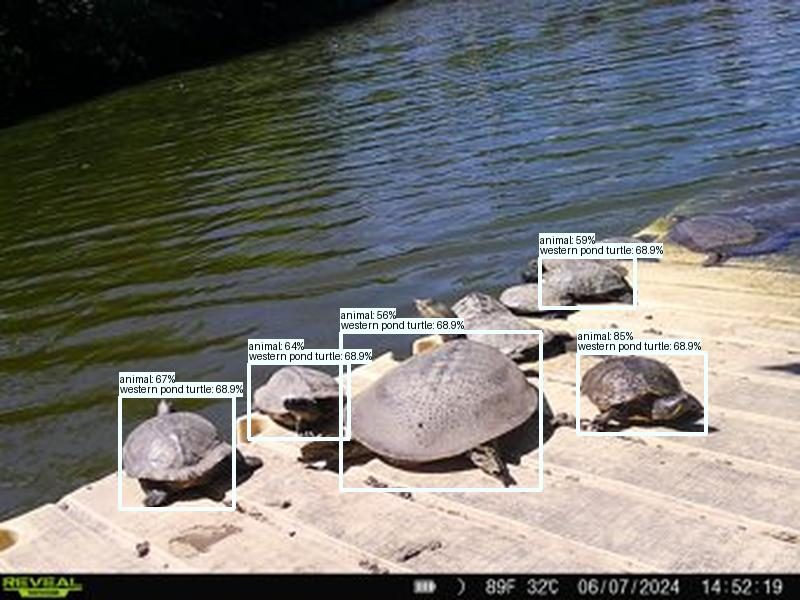Result type: detections_animal, image: images/batch_0/2024-06-27_UR011--SYFW2954.JPG, max conf: 0.808
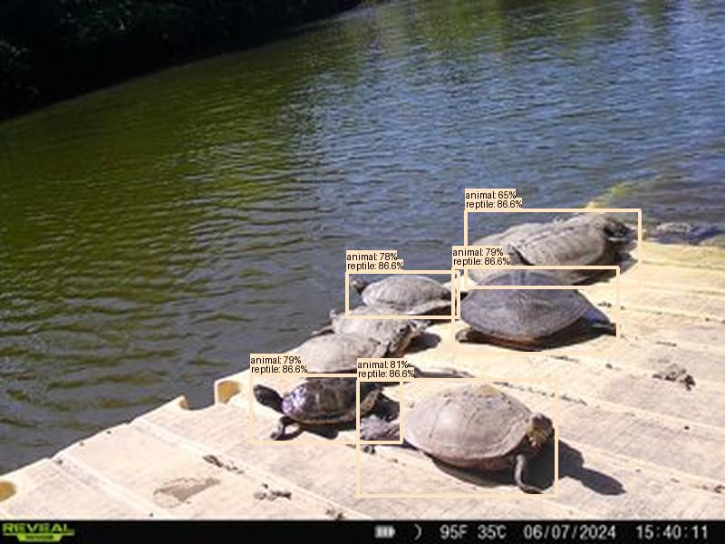Result type: detections_animal, image: images/batch_0/2024-06-27_UR011--SYFW2974.JPG, max conf: 0.917
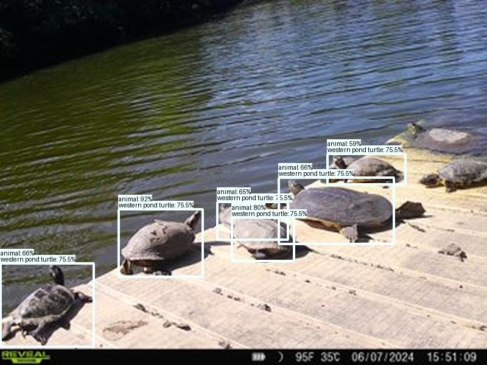Result type: detections_animal, image: images/batch_0/2024-06-27_UR011--SYFW3027.JPG, max conf: 0.613

Result type: detections_animal, image: images/batch_0/2024-06-27_UR011--SYFW3269.JPG, max conf: 0.882

Result type: detections_animal, image: images/batch_0/2024-06-27_UR011--SYFW3281.JPG, max conf: 0.783
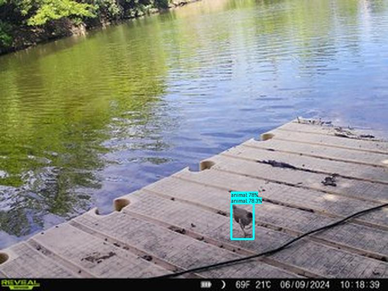Result type: detections_animal, image: images/batch_0/2024-06-27_UR011--SYFW3307.JPG, max conf: 0.701

Result type: detections_animal, image: images/batch_0/2024-06-27_UR011--SYFW3309.JPG, max conf: 0.769

Result type: detections_animal, image: images/batch_0/2024-06-27_UR011--SYFW3314.JPG, max conf: 0.840
Result type: detections_animal, image: images/batch_0/2024-06-27_UR011--SYFW3378.JPG, max conf: 0.759

Result type: detections_animal, image: images/batch_0/2024-06-27_UR011--SYFW3401.JPG, max conf: 0.849

Result type: detections_animal, image: images/batch_0/2024-06-27_UR011--SYFW3579.JPG, max conf: 0.771

Result type: detections_animal, image: images/batch_0/2024-06-27_UR011--SYFW3620.JPG, max conf: 0.753
Result type: detections_animal, image: images/batch_0/2024-06-27_UR011--SYFW3642.JPG, max conf: 0.739
Result type: detections_animal, image: images/batch_0/2024-06-27_UR011--SYFW3643.JPG, max conf: 0.708

Result type: detections_animal, image: images/batch_0/2024-06-27_UR011--SYFW3684.JPG, max conf: 0.875

Result type: detections_animal, image: images/batch_0/2024-06-27_UR011--SYFW3727.JPG, max conf: 0.891

Result type: detections_animal, image: images/batch_0/2024-06-27_UR011--SYFW3762.JPG, max conf: 0.907
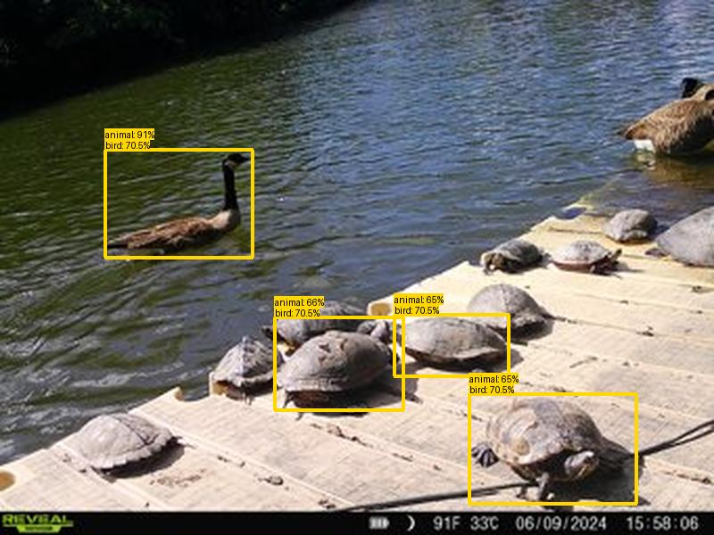Result type: detections_animal, image: images/batch_0/2024-06-27_UR011--SYFW3835.JPG, max conf: 0.713

Result type: detections_animal, image: images/batch_0/2024-06-27_UR011--SYFW3842.JPG, max conf: 0.805
Result type: detections_animal, image: images/batch_0/2024-06-27_UR011--SYFW3858.JPG, max conf: 0.782
Result type: detections_animal, image: images/batch_0/2024-06-27_UR011--SYFW3892.JPG, max conf: 0.802
Result type: detections_animal, image: images/batch_0/2024-06-27_UR011--SYFW3974.JPG, max conf: 0.949
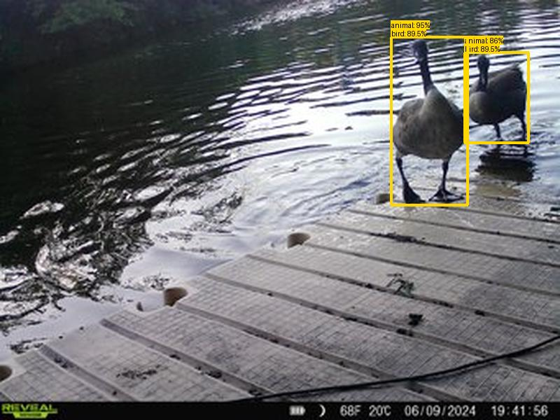Result type: detections_animal, image: images/batch_0/2024-06-27_UR011--SYFW4008.JPG, max conf: 0.962
Result type: detections_animal, image: images/batch_0/2024-06-27_UR011--SYFW4407.JPG, max conf: 0.803
Result type: detections_animal, image: images/batch_0/2024-06-27_UR011--SYFW4527.JPG, max conf: 0.738
Result type: detections_animal, image: images/batch_0/2024-06-27_UR011--SYFW4563.JPG, max conf: 0.704

Result type: detections_animal, image: images/batch_0/2024-06-27_UR011--SYFW4625.JPG, max conf: 0.847

Result type: detections_animal, image: images/batch_0/2024-06-27_UR011--SYFW4656.JPG, max conf: 0.853

Result type: detections_animal, image: images/batch_0/2024-06-27_UR011--SYFW4678.JPG, max conf: 0.853

Result type: detections_animal, image: images/batch_0/2024-06-27_UR011--SYFW4704.JPG, max conf: 0.854
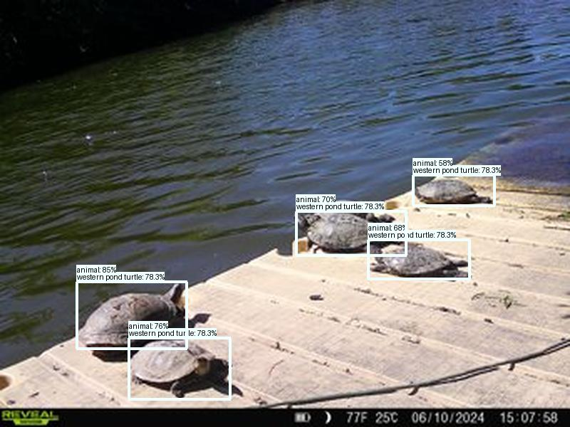Result type: detections_animal, image: images/batch_0/2024-06-27_UR011--SYFW4804.JPG, max conf: 0.728

Result type: detections_animal, image: images/batch_0/2024-06-27_UR011--SYFW4810.JPG, max conf: 0.860
Result type: detections_animal, image: images/batch_0/2024-06-27_UR011--SYFW4860.JPG, max conf: 0.823

Result type: detections_animal, image: images/batch_0/2024-06-27_UR011--SYFW4861.JPG, max conf: 0.818

Result type: detections_animal, image: images/batch_0/2024-06-27_UR011--SYFW4869.JPG, max conf: 0.810
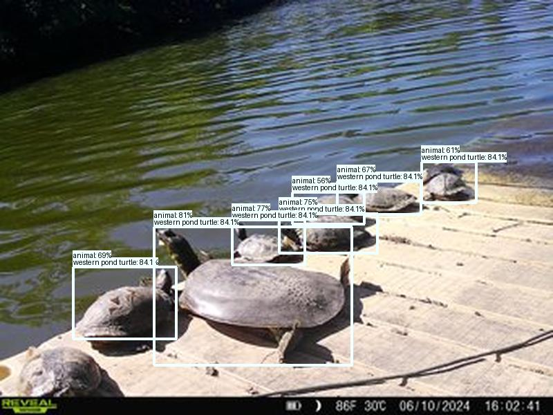Result type: detections_animal, image: images/batch_0/2024-06-27_UR011--SYFW4922.JPG, max conf: 0.768

Result type: detections_animal, image: images/batch_0/2024-06-27_UR011--SYFW4925.JPG, max conf: 0.851
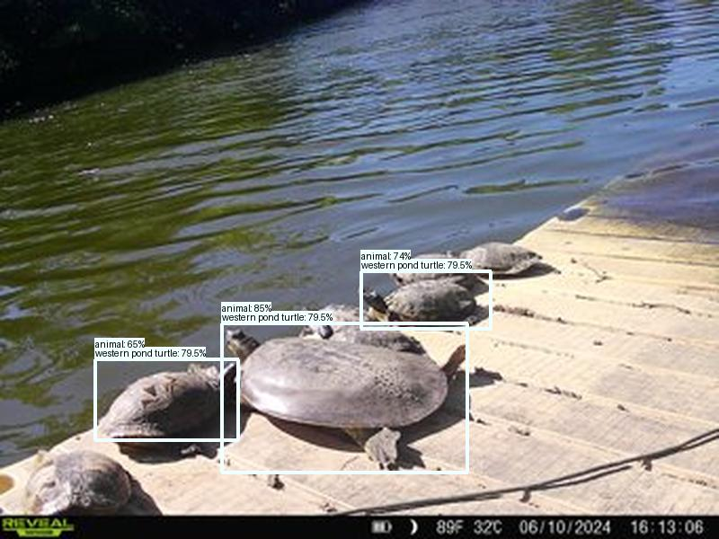Result type: detections_animal, image: images/batch_0/2024-06-27_UR011--SYFW4953.JPG, max conf: 0.594

Result type: detections_animal, image: images/batch_0/2024-06-27_UR011--SYFW5048.JPG, max conf: 0.800

Result type: detections_animal, image: images/batch_0/2024-06-27_UR011--SYFW5090.JPG, max conf: 0.862

Result type: detections_animal, image: images/batch_0/2024-06-27_UR011--SYFW5130.JPG, max conf: 0.912

Result type: detections_animal, image: images/batch_0/2024-06-27_UR011--SYFW5176.JPG, max conf: 0.801

Result type: detections_animal, image: images/batch_0/2024-06-27_UR011--SYFW5194.JPG, max conf: 0.748

Result type: detections_animal, image: images/batch_0/2024-06-27_UR011--SYFW5417.JPG, max conf: 0.707

Result type: detections_animal, image: images/batch_0/2024-06-27_UR011--SYFW5538.JPG, max conf: 0.860
Result type: detections_animal, image: images/batch_0/2024-06-27_UR011--SYFW5629.JPG, max conf: 0.842

Result type: detections_animal, image: images/batch_0/2024-06-27_UR011--SYFW5661.JPG, max conf: 0.784

Result type: detections_animal, image: images/batch_0/2024-06-27_UR011--SYFW5726.JPG, max conf: 0.743

Result type: detections_animal, image: images/batch_0/2024-06-27_UR011--SYFW5767.JPG, max conf: 0.646
Result type: detections_animal, image: images/batch_0/2024-06-27_UR011--SYFW5774.JPG, max conf: 0.506
Result type: detections_animal, image: images/batch_0/2024-06-27_UR011--SYFW5793.JPG, max conf: 0.744

Result type: detections_animal, image: images/batch_0/2024-06-27_UR011--SYFW5803.JPG, max conf: 0.777
Result type: detections_animal, image: images/batch_0/2024-06-27_UR011--SYFW5805.JPG, max conf: 0.713

Result type: detections_animal, image: images/batch_0/2024-06-27_UR011--SYFW5866.JPG, max conf: 0.730

Result type: detections_animal, image: images/batch_0/2024-06-27_UR011--SYFW5888.JPG, max conf: 0.906
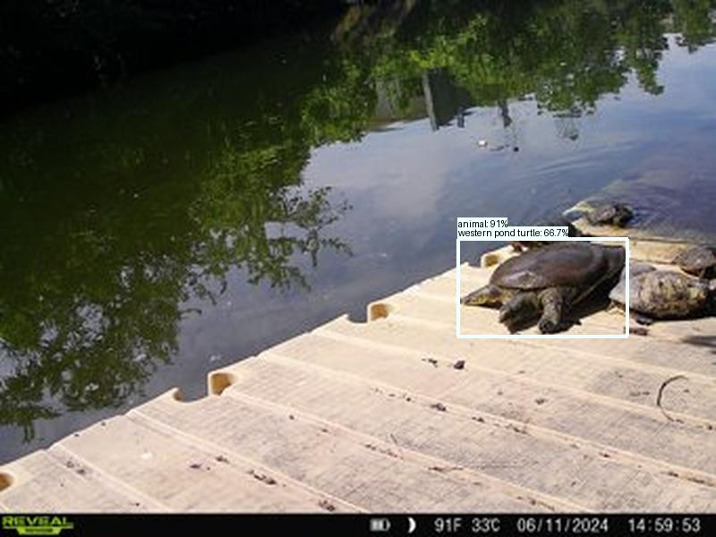Result type: detections_animal, image: images/batch_0/2024-06-27_UR011--SYFW5935.JPG, max conf: 0.738

Result type: detections_animal, image: images/batch_0/2024-06-27_UR011--SYFW5954.JPG, max conf: 0.792

Result type: detections_animal, image: images/batch_0/2024-06-27_UR011--SYFW5962.JPG, max conf: 0.593

Result type: detections_animal, image: images/batch_0/2024-06-27_UR011--SYFW5986.JPG, max conf: 0.751

Result type: detections_animal, image: images/batch_0/2024-06-27_UR011--SYFW5991.JPG, max conf: 0.811
Result type: detections_animal, image: images/batch_0/2024-06-27_UR011--SYFW6016.JPG, max conf: 0.860

Result type: detections_animal, image: images/batch_0/2024-06-27_UR011--SYFW6059.JPG, max conf: 0.915
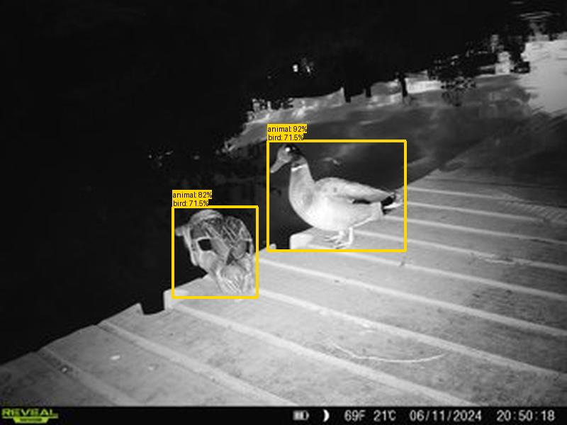Result type: detections_animal, image: images/batch_0/2024-06-27_UR011--SYFW6129.JPG, max conf: 0.741

Result type: detections_animal, image: images/batch_0/2024-06-27_UR011--SYFW6133.JPG, max conf: 0.559

Result type: detections_animal, image: images/batch_0/2024-06-27_UR011--SYFW6171.JPG, max conf: 0.687

Result type: detections_animal, image: images/batch_0/2024-06-27_UR011--SYFW6211.JPG, max conf: 0.855
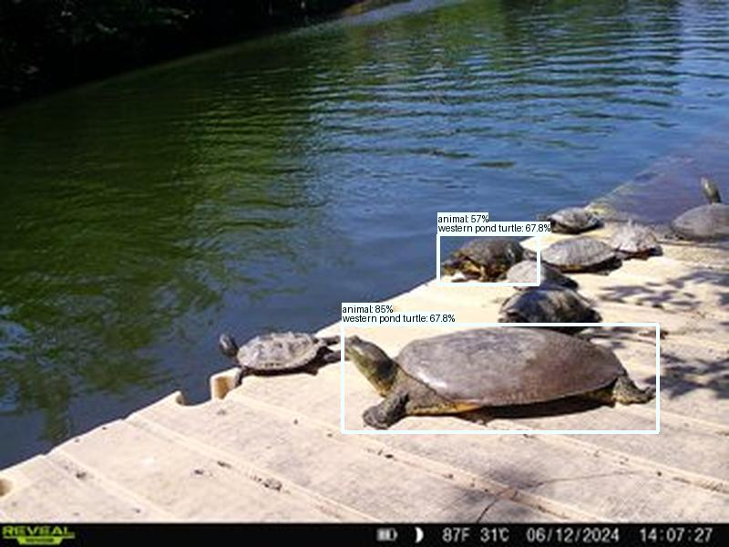Result type: detections_animal, image: images/batch_0/2024-06-27_UR011--SYFW6215.JPG, max conf: 0.869

Result type: detections_animal, image: images/batch_0/2024-06-27_UR011--SYFW6248.JPG, max conf: 0.881

Result type: detections_animal, image: images/batch_0/2024-06-27_UR011--SYFW6262.JPG, max conf: 0.909
Result type: detections_animal, image: images/batch_0/2024-06-27_UR011--SYFW6278.JPG, max conf: 0.890

Result type: detections_animal, image: images/batch_0/2024-06-27_UR011--SYFW6328.JPG, max conf: 0.786
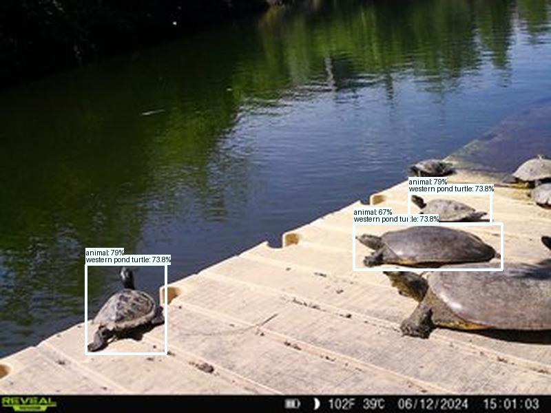Result type: detections_animal, image: images/batch_0/2024-06-27_UR011--SYFW6338.JPG, max conf: 0.905
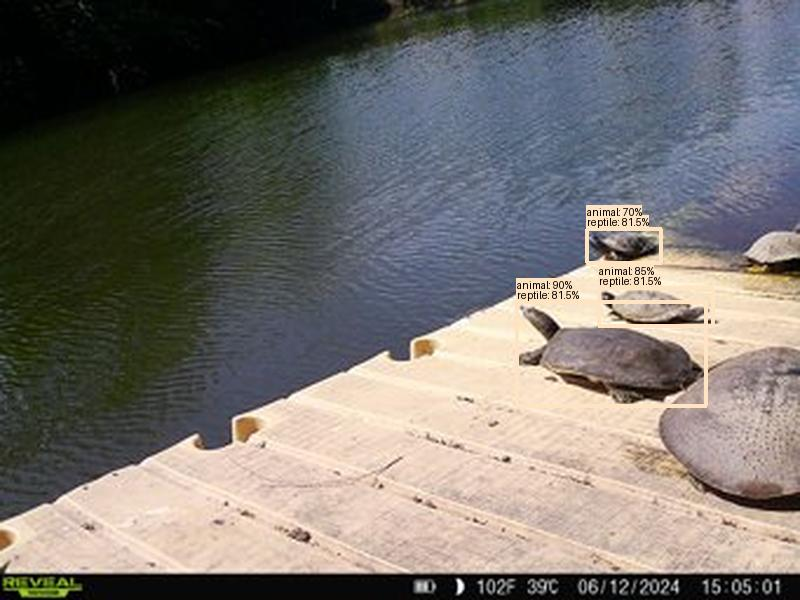Result type: detections_animal, image: images/batch_0/2024-06-27_UR011--SYFW6376.JPG, max conf: 0.557

Result type: detections_animal, image: images/batch_0/2024-06-27_UR011--SYFW6378.JPG, max conf: 0.641

Result type: detections_animal, image: images/batch_0/2024-06-27_UR011--SYFW6384.JPG, max conf: 0.840

Result type: detections_animal, image: images/batch_0/2024-06-27_UR011--SYFW6393.JPG, max conf: 0.775

Result type: detections_animal, image: images/batch_0/2024-06-27_UR011--SYFW6398.JPG, max conf: 0.906

Result type: detections_animal, image: images/batch_0/2024-06-27_UR011--SYFW6422.JPG, max conf: 0.877
Result type: detections_animal, image: images/batch_0/2024-06-27_UR011--SYFW6434.JPG, max conf: 0.885

Result type: detections_animal, image: images/batch_0/2024-06-27_UR011--SYFW6453.JPG, max conf: 0.895
Result type: detections_animal, image: images/batch_0/2024-06-27_UR011--SYFW6465.JPG, max conf: 0.854
Result type: detections_animal, image: images/batch_0/2024-06-27_UR011--SYFW6543.JPG, max conf: 0.816

Result type: detections_animal, image: images/batch_0/2024-06-27_UR011--SYFW6552.JPG, max conf: 0.780
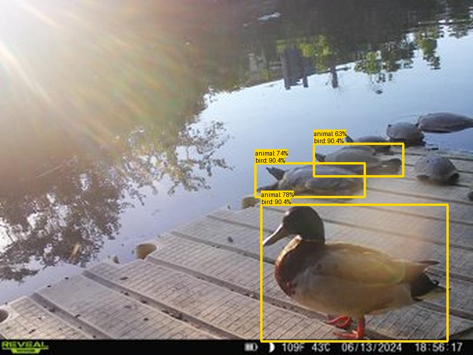Result type: detections_animal, image: images/batch_0/2024-06-27_UR011--SYFW6560.JPG, max conf: 0.954

Result type: detections_animal, image: images/batch_0/2024-06-27_UR011--SYFW6595.JPG, max conf: 0.543

Result type: detections_animal, image: images/batch_0/2024-06-27_UR011--SYFW6651.JPG, max conf: 0.779
Result type: detections_animal, image: images/batch_0/2024-06-27_UR011--SYFW6660.JPG, max conf: 0.757

Result type: detections_animal, image: images/batch_0/2024-06-27_UR011--SYFW6665.JPG, max conf: 0.865
Result type: detections_animal, image: images/batch_0/2024-06-27_UR011--SYFW6669.JPG, max conf: 0.822
Result type: detections_animal, image: images/batch_0/2024-06-27_UR011--SYFW6676.JPG, max conf: 0.815
Result type: detections_animal, image: images/batch_0/2024-06-27_UR011--SYFW6709.JPG, max conf: 0.803

Result type: detections_animal, image: images/batch_0/2024-06-27_UR011--SYFW6749.JPG, max conf: 0.885

Result type: detections_animal, image: images/batch_0/2024-06-27_UR011--SYFW6847.JPG, max conf: 0.812
Result type: detections_animal, image: images/batch_0/2024-06-27_UR011--SYFW6888.JPG, max conf: 0.826
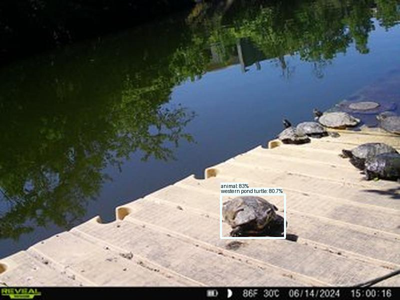Result type: detections_animal, image: images/batch_0/2024-06-27_UR011--SYFW6894.JPG, max conf: 0.857
Result type: detections_animal, image: images/batch_0/2024-06-27_UR011--SYFW6897.JPG, max conf: 0.828

Result type: detections_animal, image: images/batch_0/2024-06-27_UR011--SYFW6925.JPG, max conf: 0.854
Result type: detections_animal, image: images/batch_0/2024-06-27_UR011--SYFW6989.JPG, max conf: 0.857
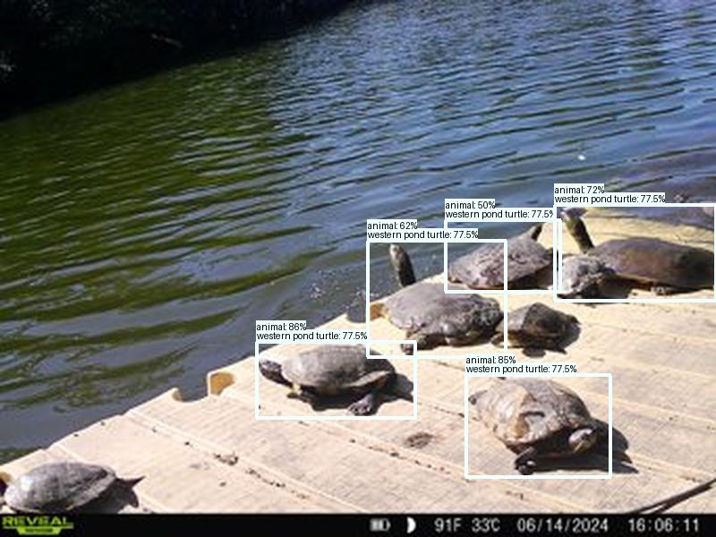Result type: detections_animal, image: images/batch_0/2024-06-27_UR011--SYFW7013.JPG, max conf: 0.910

Result type: detections_animal, image: images/batch_0/2024-06-27_UR011--SYFW7017.JPG, max conf: 0.892

Result type: detections_animal, image: images/batch_0/2024-06-27_UR011--SYFW7080.JPG, max conf: 0.827
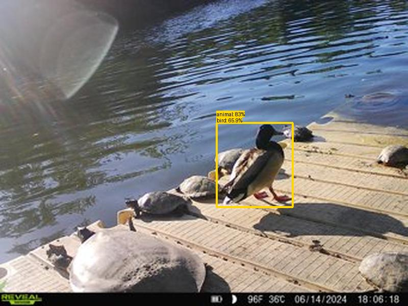Result type: detections_animal, image: images/batch_0/2024-06-27_UR011--SYFW7092.JPG, max conf: 0.900
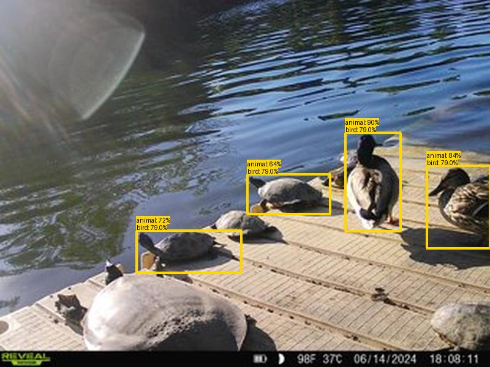Result type: detections_animal, image: images/batch_0/2024-06-27_UR011--SYFW7116.JPG, max conf: 0.903
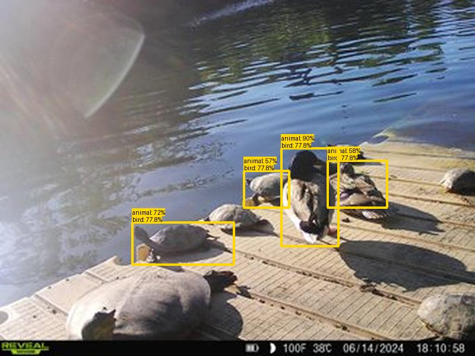Result type: detections_animal, image: images/batch_0/2024-06-27_UR011--SYFW7122.JPG, max conf: 0.888
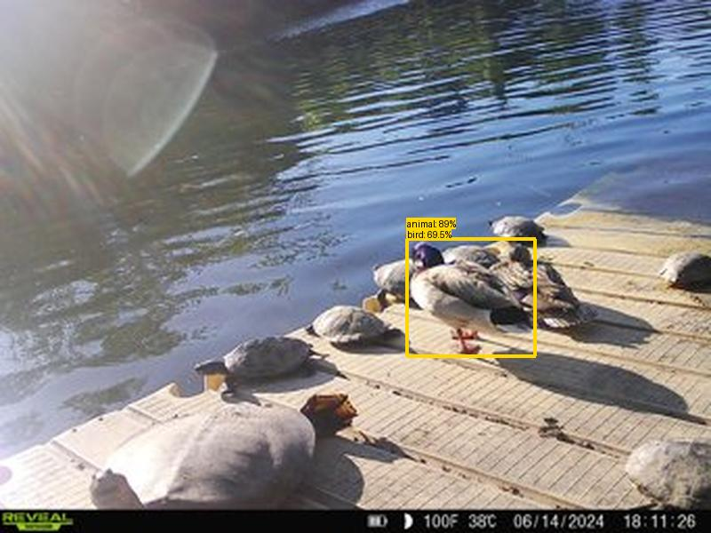Result type: detections_animal, image: images/batch_0/2024-06-27_UR011--SYFW7174.JPG, max conf: 0.837

Result type: detections_animal, image: images/batch_0/2024-06-27_UR011--SYFW7189.JPG, max conf: 0.700

Result type: detections_animal, image: images/batch_0/2024-06-27_UR011--SYFW7196.JPG, max conf: 0.758
Result type: detections_animal, image: images/batch_0/2024-06-27_UR011--SYFW7220.JPG, max conf: 0.851

Result type: detections_animal, image: images/batch_0/2024-06-27_UR011--SYFW7269.JPG, max conf: 0.873

Result type: detections_animal, image: images/batch_0/2024-06-27_UR011--SYFW7313.JPG, max conf: 0.936

Result type: detections_animal, image: images/batch_0/2024-06-27_UR011--SYFW7318.JPG, max conf: 0.938
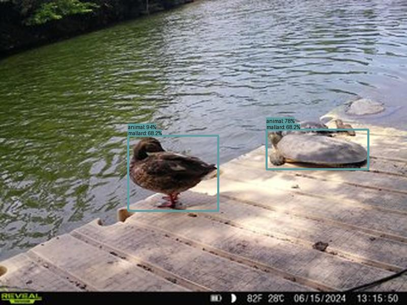Result type: detections_animal, image: images/batch_0/2024-06-27_UR011--SYFW7323.JPG, max conf: 0.941
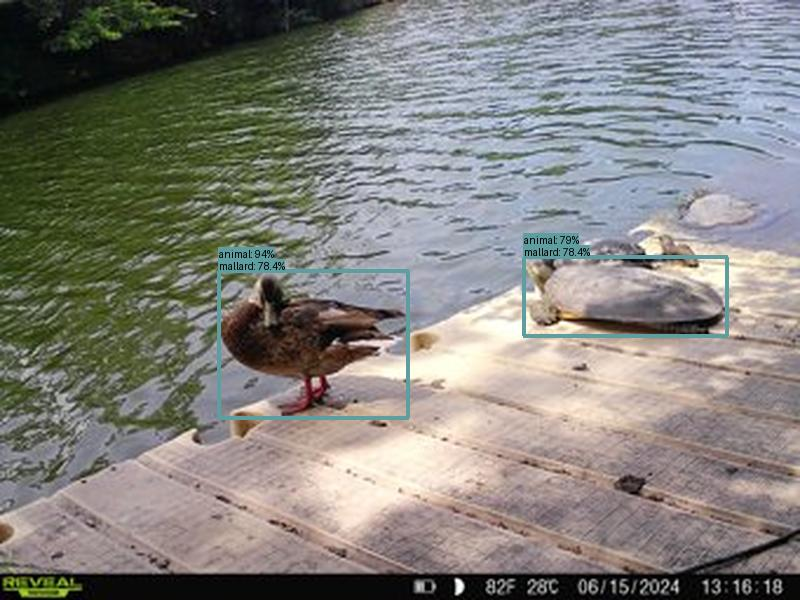Result type: detections_animal, image: images/batch_0/2024-06-27_UR011--SYFW7327.JPG, max conf: 0.959
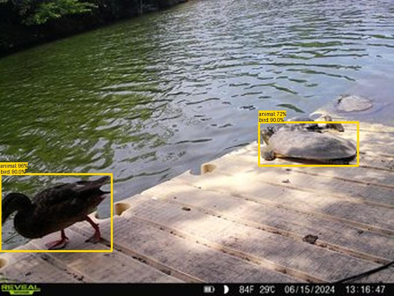Result type: detections_animal, image: images/batch_0/2024-06-27_UR011--SYFW7347.JPG, max conf: 0.869

Result type: detections_animal, image: images/batch_0/2024-06-27_UR011--SYFW7411.JPG, max conf: 0.951
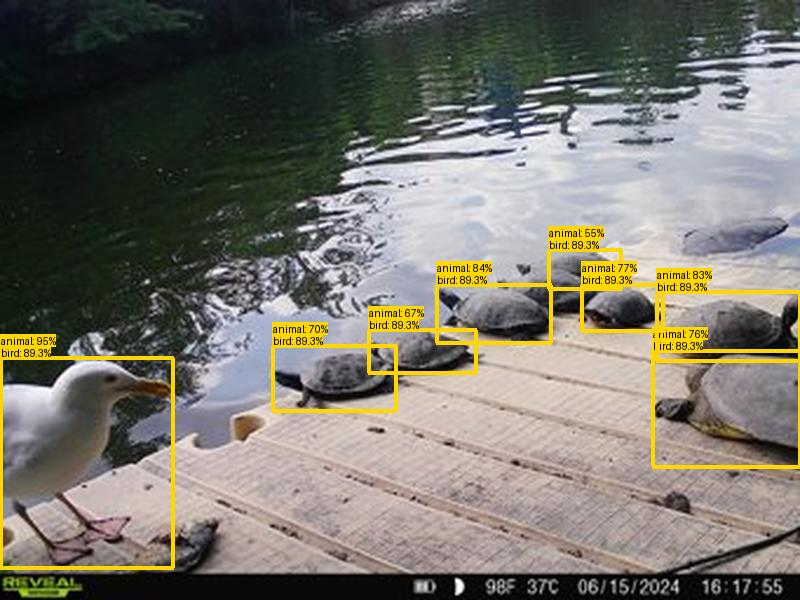Result type: detections_animal, image: images/batch_0/2024-06-27_UR011--SYFW7434.JPG, max conf: 0.855
Result type: detections_animal, image: images/batch_0/2024-06-27_UR011--SYFW7478.JPG, max conf: 0.613

Result type: detections_animal, image: images/batch_0/2024-06-27_UR011--SYFW7531.JPG, max conf: 0.770
Result type: detections_animal, image: images/batch_0/2024-06-27_UR011--SYFW7633.JPG, max conf: 0.847
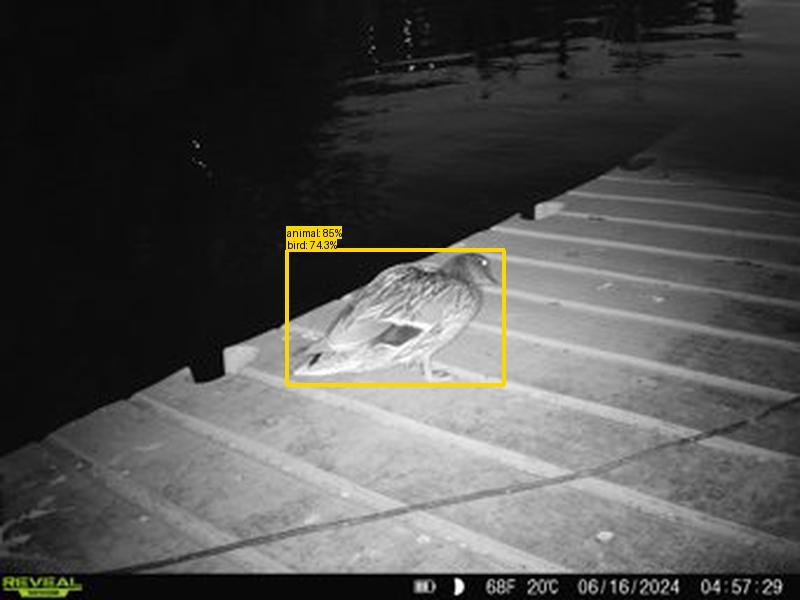Result type: detections_animal, image: images/batch_0/2024-06-27_UR011--SYFW7680.JPG, max conf: 0.850

Result type: detections_animal, image: images/batch_0/2024-06-27_UR011--SYFW7705.JPG, max conf: 0.650
Result type: detections_animal, image: images/batch_0/2024-06-27_UR011--SYFW7716.JPG, max conf: 0.890

Result type: detections_animal, image: images/batch_0/2024-06-27_UR011--SYFW7728.JPG, max conf: 0.722
Result type: detections_animal, image: images/batch_0/2024-06-27_UR011--SYFW8734.JPG, max conf: 0.855

Result type: detections_animal, image: images/batch_1/2024-06-27_UR011--SYFW0097.JPG, max conf: 0.758
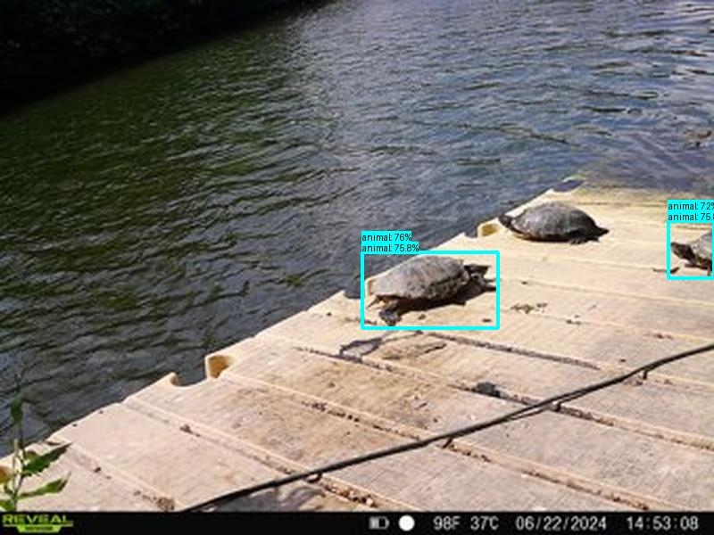Result type: detections_animal, image: images/batch_1/2024-06-27_UR011--SYFW0138.JPG, max conf: 0.821

Result type: detections_animal, image: images/batch_1/2024-06-27_UR011--SYFW0173.JPG, max conf: 0.679

Result type: detections_animal, image: images/batch_1/2024-06-27_UR011--SYFW0177.JPG, max conf: 0.805

Result type: detections_animal, image: images/batch_1/2024-06-27_UR011--SYFW0198.JPG, max conf: 0.876
Result type: detections_animal, image: images/batch_1/2024-06-27_UR011--SYFW0244.JPG, max conf: 0.936

Result type: detections_animal, image: images/batch_1/2024-06-27_UR011--SYFW0246.JPG, max conf: 0.874

Result type: detections_animal, image: images/batch_1/2024-06-27_UR011--SYFW0268.JPG, max conf: 0.914
Result type: detections_animal, image: images/batch_1/2024-06-27_UR011--SYFW0326.JPG, max conf: 0.919
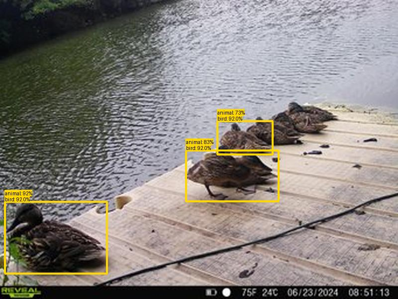Result type: detections_animal, image: images/batch_1/2024-06-27_UR011--SYFW0354.JPG, max conf: 0.508
Result type: detections_animal, image: images/batch_1/2024-06-27_UR011--SYFW0359.JPG, max conf: 0.854
Result type: detections_animal, image: images/batch_1/2024-06-27_UR011--SYFW0404.JPG, max conf: 0.857
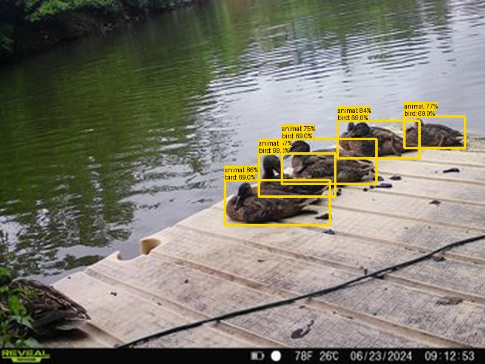Result type: detections_animal, image: images/batch_1/2024-06-27_UR011--SYFW0411.JPG, max conf: 0.789
Result type: detections_animal, image: images/batch_1/2024-06-27_UR011--SYFW0414.JPG, max conf: 0.859
Result type: detections_animal, image: images/batch_1/2024-06-27_UR011--SYFW0420.JPG, max conf: 0.900

Result type: detections_animal, image: images/batch_1/2024-06-27_UR011--SYFW0422.JPG, max conf: 0.805
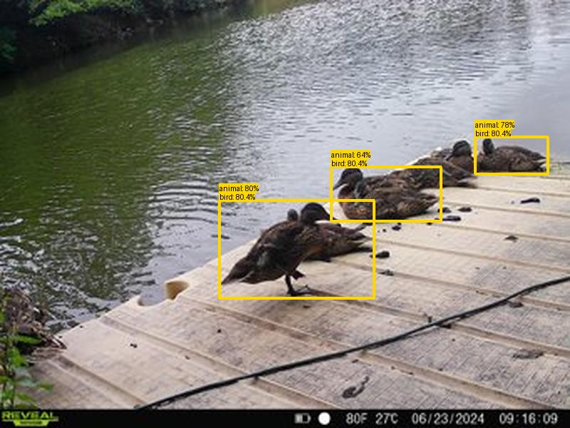Result type: detections_animal, image: images/batch_1/2024-06-27_UR011--SYFW0474.JPG, max conf: 0.913
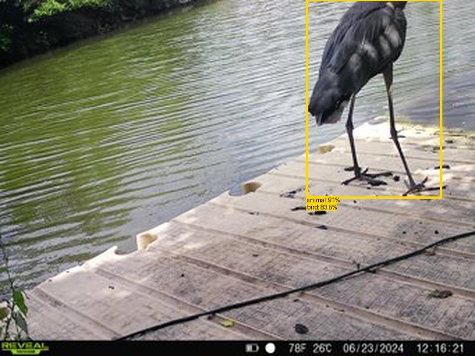Result type: detections_animal, image: images/batch_1/2024-06-27_UR011--SYFW0499.JPG, max conf: 0.965

Result type: detections_animal, image: images/batch_1/2024-06-27_UR011--SYFW0508.JPG, max conf: 0.939
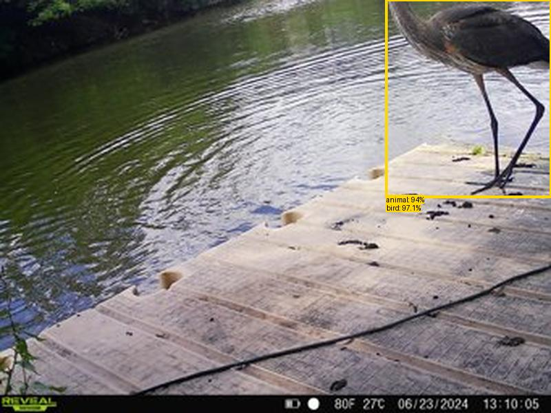Result type: detections_animal, image: images/batch_1/2024-06-27_UR011--SYFW0544.JPG, max conf: 0.858
Result type: detections_animal, image: images/batch_1/2024-06-27_UR011--SYFW0547.JPG, max conf: 0.788

Result type: detections_animal, image: images/batch_1/2024-06-27_UR011--SYFW0553.JPG, max conf: 0.828
Result type: detections_animal, image: images/batch_1/2024-06-27_UR011--SYFW0559.JPG, max conf: 0.693
Result type: detections_animal, image: images/batch_1/2024-06-27_UR011--SYFW0612.JPG, max conf: 0.845

Result type: detections_animal, image: images/batch_1/2024-06-27_UR011--SYFW0661.JPG, max conf: 0.962
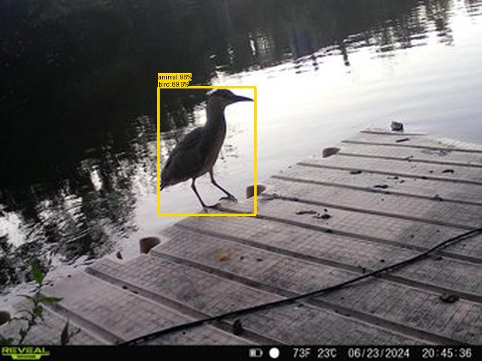Result type: detections_animal, image: images/batch_1/2024-06-27_UR011--SYFW0706.JPG, max conf: 0.603

Result type: detections_animal, image: images/batch_1/2024-06-27_UR011--SYFW0772.JPG, max conf: 0.656

Result type: detections_animal, image: images/batch_1/2024-06-27_UR011--SYFW0796.JPG, max conf: 0.689

Result type: detections_animal, image: images/batch_1/2024-06-27_UR011--SYFW0801.JPG, max conf: 0.679

Result type: detections_animal, image: images/batch_1/2024-06-27_UR011--SYFW0802.JPG, max conf: 0.680
Result type: detections_animal, image: images/batch_1/2024-06-27_UR011--SYFW0857.JPG, max conf: 0.638

Result type: detections_animal, image: images/batch_1/2024-06-27_UR011--SYFW0993.JPG, max conf: 0.746
Result type: detections_animal, image: images/batch_1/2024-06-27_UR011--SYFW1063.JPG, max conf: 0.921

Result type: detections_animal, image: images/batch_1/2024-06-27_UR011--SYFW1074.JPG, max conf: 0.950
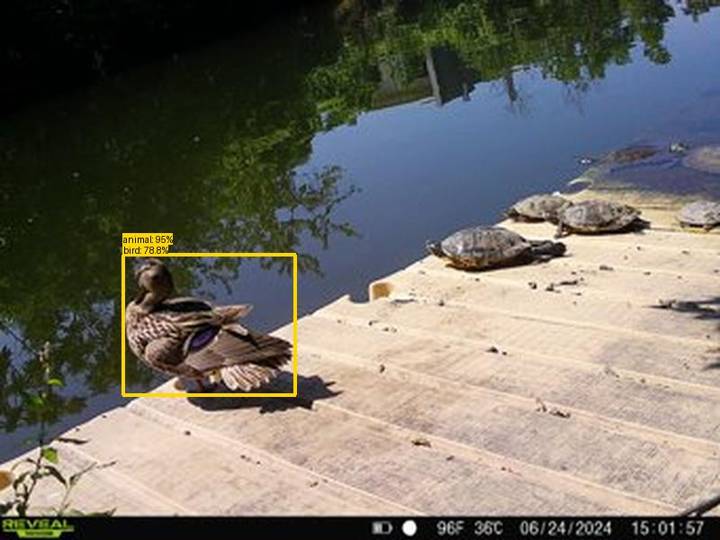Result type: detections_animal, image: images/batch_1/2024-06-27_UR011--SYFW1107.JPG, max conf: 0.862
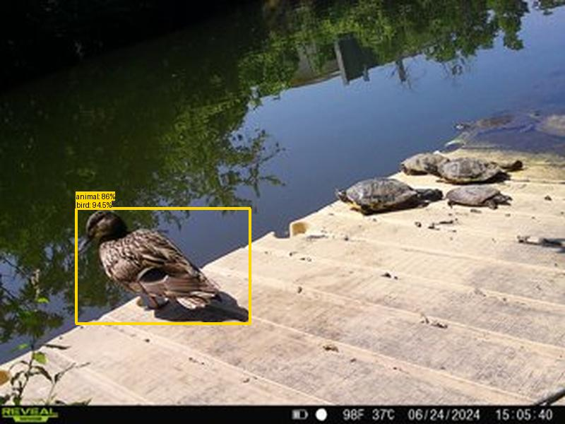Result type: detections_animal, image: images/batch_1/2024-06-27_UR011--SYFW1149.JPG, max conf: 0.764

Result type: detections_animal, image: images/batch_1/2024-06-27_UR011--SYFW1207.JPG, max conf: 0.818

Result type: detections_animal, image: images/batch_1/2024-06-27_UR011--SYFW1235.JPG, max conf: 0.907

Result type: detections_animal, image: images/batch_1/2024-06-27_UR011--SYFW1238.JPG, max conf: 0.684

Result type: detections_animal, image: images/batch_1/2024-06-27_UR011--SYFW1287.JPG, max conf: 0.764

Result type: detections_animal, image: images/batch_1/2024-06-27_UR011--SYFW1294.JPG, max conf: 0.792
Result type: detections_animal, image: images/batch_1/2024-06-27_UR011--SYFW1330.JPG, max conf: 0.885

Result type: detections_animal, image: images/batch_1/2024-06-27_UR011--SYFW1331.JPG, max conf: 0.899
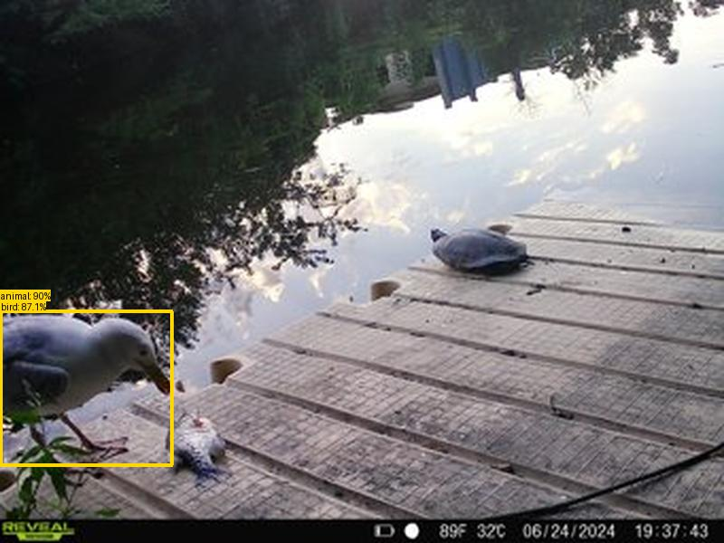Result type: detections_animal, image: images/batch_1/2024-06-27_UR011--SYFW1363.JPG, max conf: 0.941
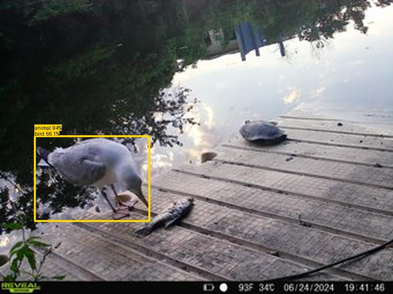Result type: detections_animal, image: images/batch_1/2024-06-27_UR011--SYFW1429.JPG, max conf: 0.949
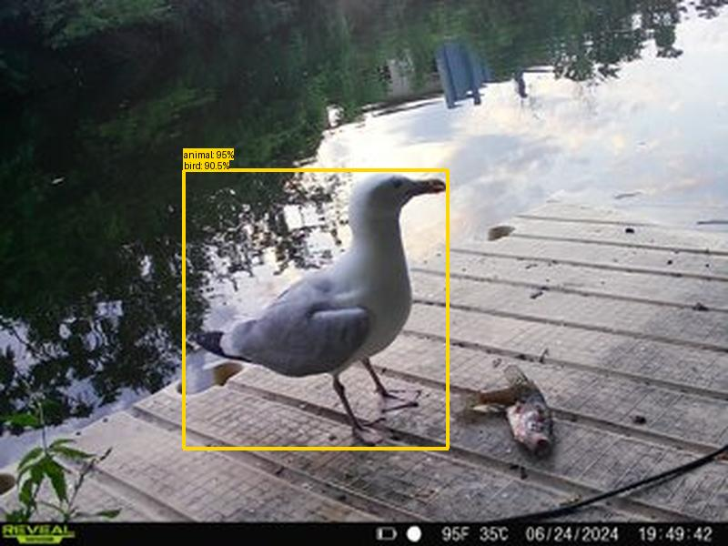Result type: detections_animal, image: images/batch_1/2024-06-27_UR011--SYFW1431.JPG, max conf: 0.938

Result type: detections_animal, image: images/batch_1/2024-06-27_UR011--SYFW1466.JPG, max conf: 0.949
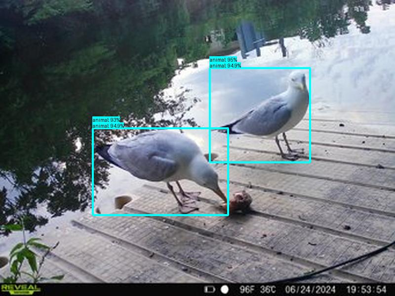Result type: detections_animal, image: images/batch_1/2024-06-27_UR011--SYFW1487.JPG, max conf: 0.956
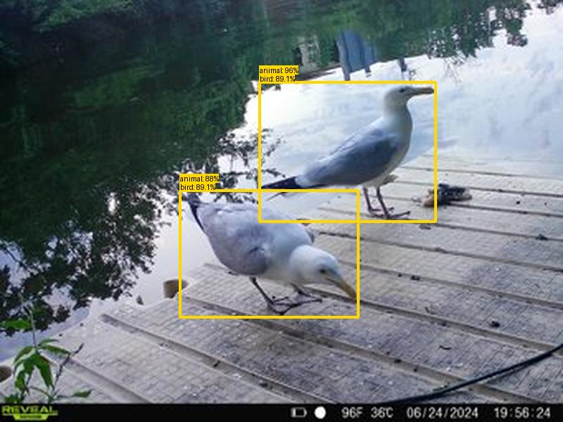Result type: detections_animal, image: images/batch_1/2024-06-27_UR011--SYFW1495.JPG, max conf: 0.907

Result type: detections_animal, image: images/batch_1/2024-06-27_UR011--SYFW1550.JPG, max conf: 0.946

Result type: detections_animal, image: images/batch_1/2024-06-27_UR011--SYFW1562.JPG, max conf: 0.867

Result type: detections_animal, image: images/batch_1/2024-06-27_UR011--SYFW1589.JPG, max conf: 0.864

Result type: detections_animal, image: images/batch_1/2024-06-27_UR011--SYFW1636.JPG, max conf: 0.865

Result type: detections_animal, image: images/batch_1/2024-06-27_UR011--SYFW1736.JPG, max conf: 0.870
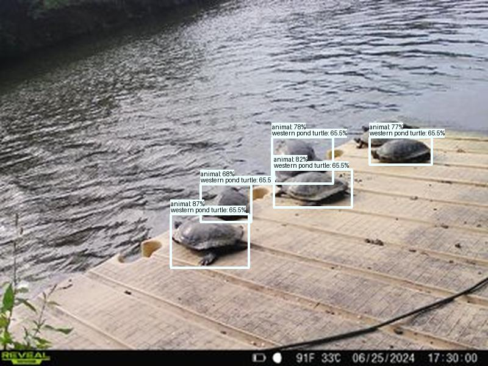Result type: detections_animal, image: images/batch_1/2024-06-27_UR011--SYFW1833.JPG, max conf: 0.934

Result type: detections_animal, image: images/batch_1/2024-06-27_UR011--SYFW1841.JPG, max conf: 0.822
Result type: detections_animal, image: images/batch_1/2024-06-27_UR011--SYFW1868.JPG, max conf: 0.833

Result type: detections_animal, image: images/batch_1/2024-06-27_UR011--SYFW1944.JPG, max conf: 0.884
Result type: detections_animal, image: images/batch_1/2024-06-27_UR011--SYFW2045.JPG, max conf: 0.547

Result type: detections_animal, image: images/batch_1/2024-06-27_UR011--SYFW2057.JPG, max conf: 0.770

Result type: detections_animal, image: images/batch_1/2024-06-27_UR011--SYFW2100.JPG, max conf: 0.712
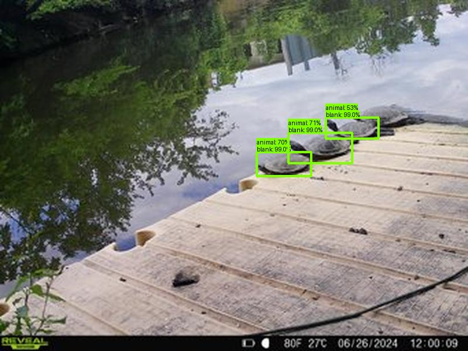Result type: detections_animal, image: images/batch_1/2024-06-27_UR011--SYFW2110.JPG, max conf: 0.859

Result type: detections_animal, image: images/batch_1/2024-06-27_UR011--SYFW2226.JPG, max conf: 0.828
Result type: detections_animal, image: images/batch_1/2024-06-27_UR011--SYFW2245.JPG, max conf: 0.734

Result type: detections_animal, image: images/batch_1/2024-06-27_UR011--SYFW2265.JPG, max conf: 0.845
Result type: detections_animal, image: images/batch_1/2024-06-27_UR011--SYFW2315.JPG, max conf: 0.806
Result type: detections_animal, image: images/batch_1/2024-06-27_UR011--SYFW2395.JPG, max conf: 0.932

Result type: detections_animal, image: images/batch_1/2024-06-27_UR011--SYFW2399.JPG, max conf: 0.935
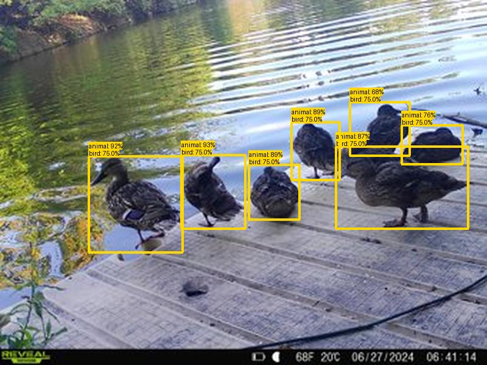Result type: detections_animal, image: images/batch_1/2024-06-27_UR011--SYFW2434.JPG, max conf: 0.576

Result type: detections_animal, image: images/batch_1/2024-06-27_UR011--SYFW2466.JPG, max conf: 0.564

Result type: detections_animal, image: images/batch_1/2024-06-27_UR011--SYFW2498.JPG, max conf: 0.756
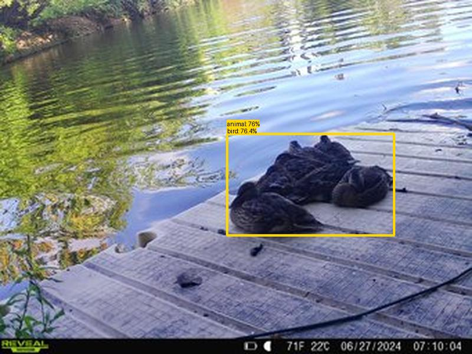Result type: detections_animal, image: images/batch_1/2024-06-27_UR011--SYFW2595.JPG, max conf: 0.820
Result type: detections_animal, image: images/batch_1/2024-06-27_UR011--SYFW2630.JPG, max conf: 0.864
Result type: detections_animal, image: images/batch_1/2024-06-27_UR011--SYFW2631.JPG, max conf: 0.863

Result type: detections_animal, image: images/batch_1/2024-06-27_UR011--SYFW2666.JPG, max conf: 0.566
Result type: detections_animal, image: images/batch_1/2024-06-27_UR011--SYFW2774.JPG, max conf: 0.793

Result type: detections_animal, image: images/batch_1/2024-06-27_UR011--SYFW2800.JPG, max conf: 0.842

Result type: detections_animal, image: images/batch_1/2024-06-27_UR011--SYFW2848.JPG, max conf: 0.799

Result type: detections_animal, image: images/batch_1/2024-06-27_UR011--SYFW2858.JPG, max conf: 0.853

Result type: detections_animal, image: images/batch_1/2024-06-27_UR011--SYFW2951.JPG, max conf: 0.785
Result type: detections_animal, image: images/batch_1/2024-06-27_UR011--SYFW3046.JPG, max conf: 0.618

Result type: detections_animal, image: images/batch_1/2024-06-27_UR011--SYFW3066.JPG, max conf: 0.542

Result type: detections_animal, image: images/batch_1/2024-06-27_UR011--SYFW3076.JPG, max conf: 0.640

Result type: detections_animal, image: images/batch_1/2024-06-27_UR011--SYFW7804.JPG, max conf: 0.833
Result type: detections_animal, image: images/batch_1/2024-06-27_UR011--SYFW7841.JPG, max conf: 0.896

Result type: detections_animal, image: images/batch_1/2024-06-27_UR011--SYFW7898.JPG, max conf: 0.884

Result type: detections_animal, image: images/batch_1/2024-06-27_UR011--SYFW8008.JPG, max conf: 0.788

Result type: detections_animal, image: images/batch_1/2024-06-27_UR011--SYFW8046.JPG, max conf: 0.890

Result type: detections_animal, image: images/batch_1/2024-06-27_UR011--SYFW8049.JPG, max conf: 0.887

Result type: detections_animal, image: images/batch_1/2024-06-27_UR011--SYFW8123.JPG, max conf: 0.578

Result type: detections_animal, image: images/batch_1/2024-06-27_UR011--SYFW8141.JPG, max conf: 0.852
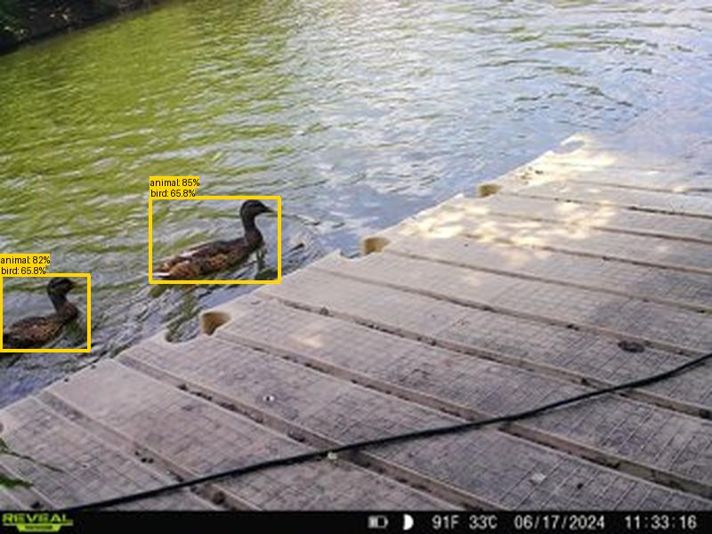Result type: detections_animal, image: images/batch_1/2024-06-27_UR011--SYFW8150.JPG, max conf: 0.870

Result type: detections_animal, image: images/batch_1/2024-06-27_UR011--SYFW8165.JPG, max conf: 0.957
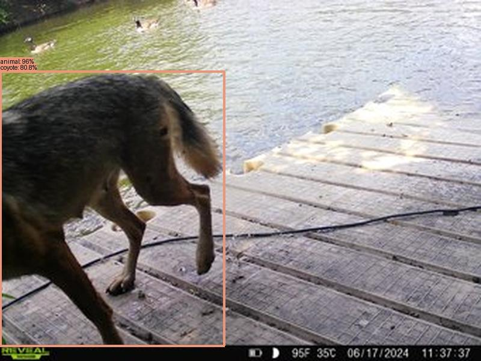Result type: detections_animal, image: images/batch_1/2024-06-27_UR011--SYFW8195.JPG, max conf: 0.861

Result type: detections_animal, image: images/batch_1/2024-06-27_UR011--SYFW8225.JPG, max conf: 0.870
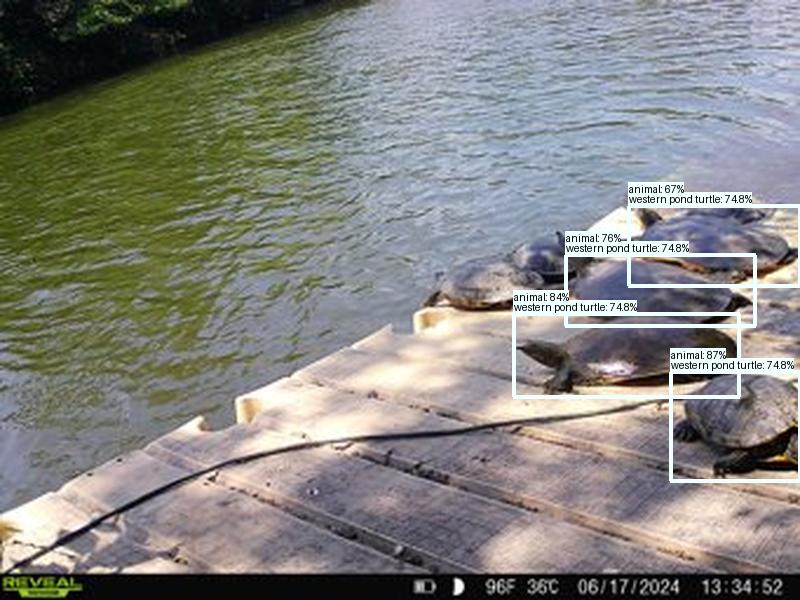Result type: detections_animal, image: images/batch_1/2024-06-27_UR011--SYFW8275.JPG, max conf: 0.922

Result type: detections_animal, image: images/batch_1/2024-06-27_UR011--SYFW8283.JPG, max conf: 0.845

Result type: detections_animal, image: images/batch_1/2024-06-27_UR011--SYFW8314.JPG, max conf: 0.863
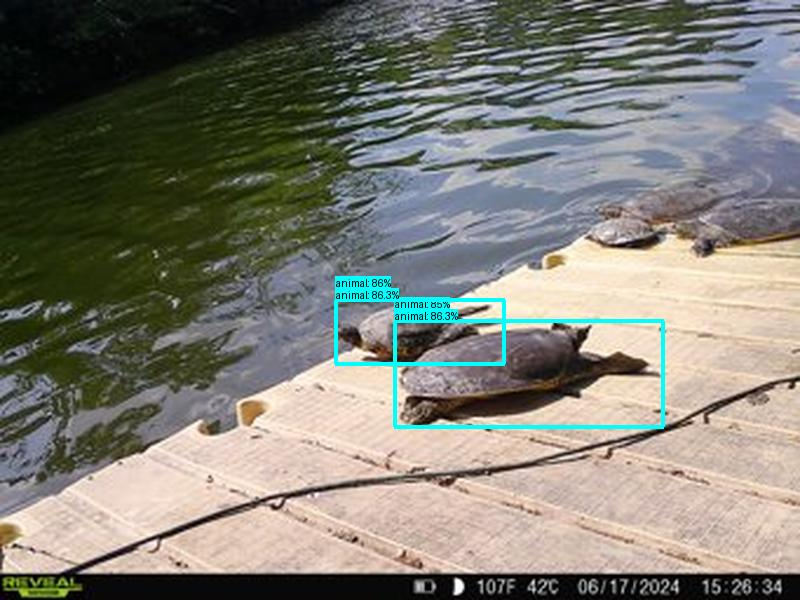Result type: detections_animal, image: images/batch_1/2024-06-27_UR011--SYFW8335.JPG, max conf: 0.892

Result type: detections_animal, image: images/batch_1/2024-06-27_UR011--SYFW8364.JPG, max conf: 0.899
Result type: detections_animal, image: images/batch_1/2024-06-27_UR011--SYFW8366.JPG, max conf: 0.918
Result type: detections_animal, image: images/batch_1/2024-06-27_UR011--SYFW8379.JPG, max conf: 0.826

Result type: detections_animal, image: images/batch_1/2024-06-27_UR011--SYFW8459.JPG, max conf: 0.808
Result type: detections_animal, image: images/batch_1/2024-06-27_UR011--SYFW8475.JPG, max conf: 0.907
Result type: detections_animal, image: images/batch_1/2024-06-27_UR011--SYFW8492.JPG, max conf: 0.748

Result type: detections_animal, image: images/batch_1/2024-06-27_UR011--SYFW8504.JPG, max conf: 0.938
Result type: detections_animal, image: images/batch_1/2024-06-27_UR011--SYFW8511.JPG, max conf: 0.806
Result type: detections_animal, image: images/batch_1/2024-06-27_UR011--SYFW8560.JPG, max conf: 0.770

Result type: detections_animal, image: images/batch_1/2024-06-27_UR011--SYFW8589.JPG, max conf: 0.903

Result type: detections_animal, image: images/batch_1/2024-06-27_UR011--SYFW8650.JPG, max conf: 0.868

Result type: detections_animal, image: images/batch_1/2024-06-27_UR011--SYFW8652.JPG, max conf: 0.889
Result type: detections_animal, image: images/batch_1/2024-06-27_UR011--SYFW8658.JPG, max conf: 0.880

Result type: detections_animal, image: images/batch_1/2024-06-27_UR011--SYFW8773.JPG, max conf: 0.746
Result type: detections_animal, image: images/batch_1/2024-06-27_UR011--SYFW8781.JPG, max conf: 0.822
Result type: detections_animal, image: images/batch_1/2024-06-27_UR011--SYFW8807.JPG, max conf: 0.947
Result type: detections_animal, image: images/batch_1/2024-06-27_UR011--SYFW8833.JPG, max conf: 0.802
Result type: detections_animal, image: images/batch_1/2024-06-27_UR011--SYFW8837.JPG, max conf: 0.849
Result type: detections_animal, image: images/batch_1/2024-06-27_UR011--SYFW8862.JPG, max conf: 0.934
Result type: detections_animal, image: images/batch_1/2024-06-27_UR011--SYFW8936.JPG, max conf: 0.810
Result type: detections_animal, image: images/batch_1/2024-06-27_UR011--SYFW8943.JPG, max conf: 0.901
Result type: detections_animal, image: images/batch_1/2024-06-27_UR011--SYFW8954.JPG, max conf: 0.536

Result type: detections_animal, image: images/batch_1/2024-06-27_UR011--SYFW9000.JPG, max conf: 0.904

Result type: detections_animal, image: images/batch_1/2024-06-27_UR011--SYFW9005.JPG, max conf: 0.755

Result type: detections_animal, image: images/batch_1/2024-06-27_UR011--SYFW9047.JPG, max conf: 0.855

Result type: detections_animal, image: images/batch_1/2024-06-27_UR011--SYFW9052.JPG, max conf: 0.776
Result type: detections_animal, image: images/batch_1/2024-06-27_UR011--SYFW9067.JPG, max conf: 0.874
Result type: detections_animal, image: images/batch_1/2024-06-27_UR011--SYFW9069.JPG, max conf: 0.767

Result type: detections_animal, image: images/batch_1/2024-06-27_UR011--SYFW9156.JPG, max conf: 0.881
Result type: detections_animal, image: images/batch_1/2024-06-27_UR011--SYFW9160.JPG, max conf: 0.881
Result type: detections_animal, image: images/batch_1/2024-06-27_UR011--SYFW9161.JPG, max conf: 0.881

Result type: detections_animal, image: images/batch_1/2024-06-27_UR011--SYFW9230.JPG, max conf: 0.908

Result type: detections_animal, image: images/batch_1/2024-06-27_UR011--SYFW9262.JPG, max conf: 0.818
Result type: detections_animal, image: images/batch_1/2024-06-27_UR011--SYFW9298.JPG, max conf: 0.923

Result type: detections_animal, image: images/batch_1/2024-06-27_UR011--SYFW9307.JPG, max conf: 0.911

Result type: detections_animal, image: images/batch_1/2024-06-27_UR011--SYFW9347.JPG, max conf: 0.895
Result type: detections_animal, image: images/batch_1/2024-06-27_UR011--SYFW9349.JPG, max conf: 0.890
Result type: detections_animal, image: images/batch_1/2024-06-27_UR011--SYFW9387.JPG, max conf: 0.891

Result type: detections_animal, image: images/batch_1/2024-06-27_UR011--SYFW9421.JPG, max conf: 0.898

Result type: detections_animal, image: images/batch_1/2024-06-27_UR011--SYFW9482.JPG, max conf: 0.962

Result type: detections_animal, image: images/batch_1/2024-06-27_UR011--SYFW9516.JPG, max conf: 0.911
Result type: detections_animal, image: images/batch_1/2024-06-27_UR011--SYFW9527.JPG, max conf: 0.962
Result type: detections_animal, image: images/batch_1/2024-06-27_UR011--SYFW9547.JPG, max conf: 0.812
Result type: detections_animal, image: images/batch_1/2024-06-27_UR011--SYFW9551.JPG, max conf: 0.744

Result type: detections_animal, image: images/batch_1/2024-06-27_UR011--SYFW9552.JPG, max conf: 0.757
Result type: detections_animal, image: images/batch_1/2024-06-27_UR011--SYFW9558.JPG, max conf: 0.772

Result type: detections_animal, image: images/batch_1/2024-06-27_UR011--SYFW9599.JPG, max conf: 0.840

Result type: detections_animal, image: images/batch_1/2024-06-27_UR011--SYFW9606.JPG, max conf: 0.811

Result type: detections_animal, image: images/batch_1/2024-06-27_UR011--SYFW9640.JPG, max conf: 0.881
Result type: detections_animal, image: images/batch_1/2024-06-27_UR011--SYFW9714.JPG, max conf: 0.787

Result type: detections_animal, image: images/batch_1/2024-06-27_UR011--SYFW9755.JPG, max conf: 0.626

Result type: detections_animal, image: images/batch_1/2024-06-27_UR011--SYFW9807.JPG, max conf: 0.772

Result type: detections_animal, image: images/batch_1/2024-06-27_UR011--SYFW9811.JPG, max conf: 0.870
Result type: detections_animal, image: images/batch_1/2024-06-27_UR011--SYFW9867.JPG, max conf: 0.947
Result type: detections_animal, image: images/batch_1/2024-06-27_UR011--SYFW9876.JPG, max conf: 0.856
Result type: detections_animal, image: images/batch_1/2024-06-27_UR011--SYFW9963.JPG, max conf: 0.855

Result type: detections_animal, image: images/batch_1/2024-06-27_UR011--SYFW9976.JPG, max conf: 0.759

Result type: detections_animal, image: images/batch_1/2024-06-29_WM_Boardwalk_D--PICT1124.JPG, max conf: 0.819
Result type: detections_animal, image: images/batch_2/2024-06-29_WM_Boardwalk_D--PICT0387.JPG, max conf: 0.586
Result type: detections_animal, image: images/batch_2/2024-06-29_WM_Boardwalk_D--PICT0730.JPG, max conf: 0.793

Result type: detections_animal, image: images/batch_2/2024-06-29_WM_Boardwalk_D--PICT1332.JPG, max conf: 0.647
Result type: detections_animal, image: images/batch_2/2024-06-29_WM_Boardwalk_D--PICT1350.JPG, max conf: 0.614

Result type: detections_animal, image: images/batch_2/2024-06-29_WM_Boardwalk_D--PICT1765.JPG, max conf: 0.859
Result type: detections_animal, image: images/batch_2/2024-07-20_WM_Boardwalk_D_UR010--PICT0034.JPG, max conf: 0.602

Result type: detections_animal, image: images/batch_2/2024-07-20_WM_Boardwalk_G_UR004--PICT0054.JPG, max conf: 0.882
Result type: detections_animal, image: images/batch_2/2024-07-20_WM_Boardwalk_G_UR004--PICT0150.JPG, max conf: 0.851

Result type: detections_animal, image: images/batch_2/2024-07-20_WM_Boardwalk_G_UR004--PICT0801.JPG, max conf: 0.898

Result type: detections_animal, image: images/batch_2/2024-07-20_WM_DIS_A_UR016--PICT0549.JPG, max conf: 0.605

Result type: detections_animal, image: images/batch_2/2024-07-20_WM_DIS_A_UR016--PICT1082.JPG, max conf: 0.796
Result type: detections_animal, image: images/batch_2/2024-07-20_WM_DIS_A_UR016--PICT1233.JPG, max conf: 0.777
Result type: detections_animal, image: images/batch_3/2024-07-20_WM_DIS_B_UR007--PICT0006.JPG, max conf: 0.822

Result type: detections_animal, image: images/batch_3/2024-07-20_WM_DIS_B_UR007--PICT0027.JPG, max conf: 0.741

Result type: detections_animal, image: images/batch_3/2024-07-20_WM_DIS_B_UR007--PICT0097.JPG, max conf: 0.749
Result type: detections_animal, image: images/batch_3/2024-07-20_WM_DIS_B_UR007--PICT0806.JPG, max conf: 0.800
Result type: detections_animal, image: images/batch_3/2024-07-20_WM_DIS_B_UR007--PICT0862.JPG, max conf: 0.639

Result type: detections_animal, image: images/batch_3/2024-07-20_WM_DIS_B_UR007--PICT0914.JPG, max conf: 0.851

Result type: detections_animal, image: images/batch_3/2024-07-20_WM_DIS_B_UR007--PICT1007.JPG, max conf: 0.810

Result type: detections_animal, image: images/batch_3/2024-07-20_WM_DIS_B_UR007--PICT1011.JPG, max conf: 0.833

Result type: detections_animal, image: images/batch_3/2024-07-20_WM_DIS_B_UR007--PICT1017.JPG, max conf: 0.528

Result type: detections_animal, image: images/batch_3/2024-08-17_UR004--PICT0166.JPG, max conf: 0.827

Result type: detections_animal, image: images/batch_3/2024-08-17_UR004--PICT0170.JPG, max conf: 0.823
Result type: detections_animal, image: images/batch_3/2024-08-17_UR004--PICT0192.JPG, max conf: 0.895

Result type: detections_animal, image: images/batch_3/2024-08-17_UR004--PICT0206.JPG, max conf: 0.831
Result type: detections_animal, image: images/batch_3/2024-08-17_UR004--PICT0235.JPG, max conf: 0.909
Result type: detections_animal, image: images/batch_3/2024-08-17_UR016--PICT0024.JPG, max conf: 0.892

Result type: detections_animal, image: images/batch_3/2024-08-31_UR004--PICT0011.JPG, max conf: 0.913
Result type: detections_animal, image: images/batch_3/2024-08-31_UR004--PICT0025.JPG, max conf: 0.890
Result type: detections_animal, image: images/batch_3/2024-08-31_UR004--PICT0027.JPG, max conf: 0.708

Result type: detections_animal, image: images/batch_3/2024-08-31_UR004--PICT0042.JPG, max conf: 0.902
Result type: detections_animal, image: images/batch_3/2024-08-31_UR004--PICT0088.JPG, max conf: 0.828
Result type: detections_animal, image: images/batch_3/2024-08-31_UR004--PICT0131.JPG, max conf: 0.793

Result type: detections_animal, image: images/batch_3/2024-08-31_UR004--PICT0341.JPG, max conf: 0.964

Result type: detections_animal, image: images/batch_3/2024-09-14_UR013--SYFW0020.JPG, max conf: 0.816
Result type: detections_animal, image: images/batch_3/2024-09-14_UR013--SYFW0041.JPG, max conf: 0.815
Result type: detections_animal, image: images/batch_3/2024-09-21_UR006--PICT0331.JPG, max conf: 0.955
Result type: detections_animal, image: images/batch_4/2024-09-08_UR011--SYFW0780.JPG, max conf: 0.749

Result type: detections_animal, image: images/batch_4/2024-09-08_UR011--SYFW2915.JPG, max conf: 0.708

Result type: detections_animal, image: images/batch_4/2024-09-08_UR011--SYFW3841.JPG, max conf: 0.602
Result type: detections_animal, image: images/batch_4/2024-09-08_UR011--SYFW3847.JPG, max conf: 0.751

Result type: detections_animal, image: images/batch_4/2024-09-08_UR011--SYFW3853.JPG, max conf: 0.665

Result type: detections_animal, image: images/batch_4/2024-09-08_UR011--SYFW3952.JPG, max conf: 0.885
Result type: detections_animal, image: images/batch_4/2024-09-08_UR011--SYFW4950.JPG, max conf: 0.590
Result type: detections_animal, image: images/batch_4/2024-09-08_UR011--SYFW5381.JPG, max conf: 0.761

Result type: detections_animal, image: images/batch_5/2024-09-08_prologis--SYEW0237.JPG, max conf: 0.893

Result type: detections_animal, image: images/batch_5/2024-09-08_prologis--SYEW0299.JPG, max conf: 0.695
Result type: detections_animal, image: images/batch_5/2024-09-08_prologis--SYEW0371.JPG, max conf: 0.700

Result type: detections_animal, image: images/batch_5/2024-09-08_prologis--SYEW0386.JPG, max conf: 0.762
Result type: detections_animal, image: images/batch_5/2024-09-08_prologis--SYEW0431.JPG, max conf: 0.775
Result type: detections_animal, image: images/batch_5/2024-09-08_prologis--SYEW0441.JPG, max conf: 0.693
Result type: detections_animal, image: images/batch_5/2024-09-08_prologis--SYEW1870.JPG, max conf: 0.741

Result type: detections_animal, image: images/batch_5/2024-09-08_prologis--SYEW2705.JPG, max conf: 0.928
Result type: detections_animal, image: images/batch_5/2024-09-08_prologis--SYEW3294.JPG, max conf: 0.752

Result type: detections_animal, image: images/batch_5/2024-09-08_prologis--SYEW3332.JPG, max conf: 0.742
Result type: detections_animal, image: images/batch_5/2024-09-08_prologis--SYEW5182.JPG, max conf: 0.916
Result type: detections_animal, image: images/batch_6/2024-09-14_UR004--PICT0076.JPG, max conf: 0.542

Result type: detections_animal, image: images/batch_6/2024-09-14_UR004--PICT1971.JPG, max conf: 0.564

Result type: detections_animal, image: images/batch_6/2024-09-14_UR004--PICT2805.JPG, max conf: 0.598
Result type: detections_animal, image: images/batch_6/2024-09-14_UR004--PICT2849.JPG, max conf: 0.604
Result type: detections_animal, image: images/batch_7/2024-10-05_UR004--PICT0592.JPG, max conf: 0.951
Result type: detections_animal, image: images/batch_7/2024-10-12_UR005--PICT0110.JPG, max conf: 0.623

Result type: detections_animal, image: images/batch_7/2024-10-12_UR005--PICT0176.JPG, max conf: 0.570
Result type: detections_animal, image: images/batch_7/2024-10-12_UR005--PICT0261.JPG, max conf: 0.705

Result type: detections_animal, image: images/batch_7/2024-10-12_UR005--PICT0352.JPG, max conf: 0.724
Result type: detections_animal, image: images/batch_7/2024-10-12_UR005--PICT0399.JPG, max conf: 0.631
Result type: detections_animal, image: images/batch_7/2024-10-12_UR005--PICT0514.JPG, max conf: 0.733
Result type: detections_animal, image: images/batch_7/2024-10-12_UR005--PICT0752.JPG, max conf: 0.715
Result type: detections_animal, image: images/batch_7/2024-10-12_UR005--PICT1476.JPG, max conf: 0.568
Result type: detections_animal, image: images/batch_7/2024-10-19_UR004--PICT1507.JPG, max conf: 0.902

Result type: detections_animal, image: images/batch_7/2024-11-03_UR013--PICT0002.JPG, max conf: 0.673
Result type: detections_animal, image: images/batch_8/2024-10-19_UR007--PICT0319.JPG, max conf: 0.808
Result type: detections_animal, image: images/batch_8/2024-11-03_UR013--PICT0337.JPG, max conf: 0.537

Result type: detections_animal, image: images/batch_8/2024-11-03_UR013--PICT0952.JPG, max conf: 0.600

Result type: detections_animal, image: images/batch_8/2024-11-03_UR013--PICT1435.JPG, max conf: 0.505
Result type: detections_animal, image: images/batch_8/2024-11-03_UR013--PICT1888.JPG, max conf: 0.506

Result type: detections_animal, image: images/batch_8/2024-11-03_UR013--PICT2037.JPG, max conf: 0.513

Result type: detections_animal, image: images/batch_8/2025-01-04_UR027--SYFW00202.jpg, max conf: 0.856

Result type: detections_animal, image: images/batch_9/2024-11-21_UR011--SYFW0002.JPG, max conf: 0.680
Result type: detections_animal, image: images/batch_9/2024-11-21_UR011--SYFW0532.JPG, max conf: 0.748

Result type: detections_animal, image: images/batch_9/2024-11-21_UR011--SYFW0680.JPG, max conf: 0.882

Result type: detections_animal, image: images/batch_9/2024-11-21_UR011--SYFW0682.JPG, max conf: 0.928

Result type: detections_animal, image: images/batch_9/2024-11-21_UR011--SYFW0711.JPG, max conf: 0.927

Result type: detections_animal, image: images/batch_9/2024-11-21_UR011--SYFW0718.JPG, max conf: 0.886